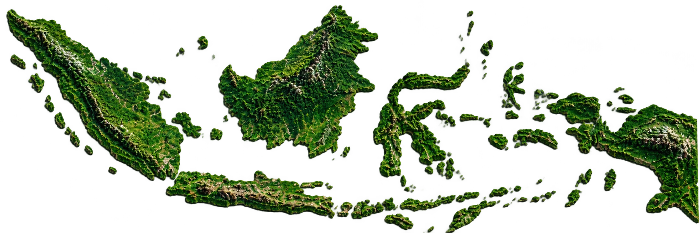
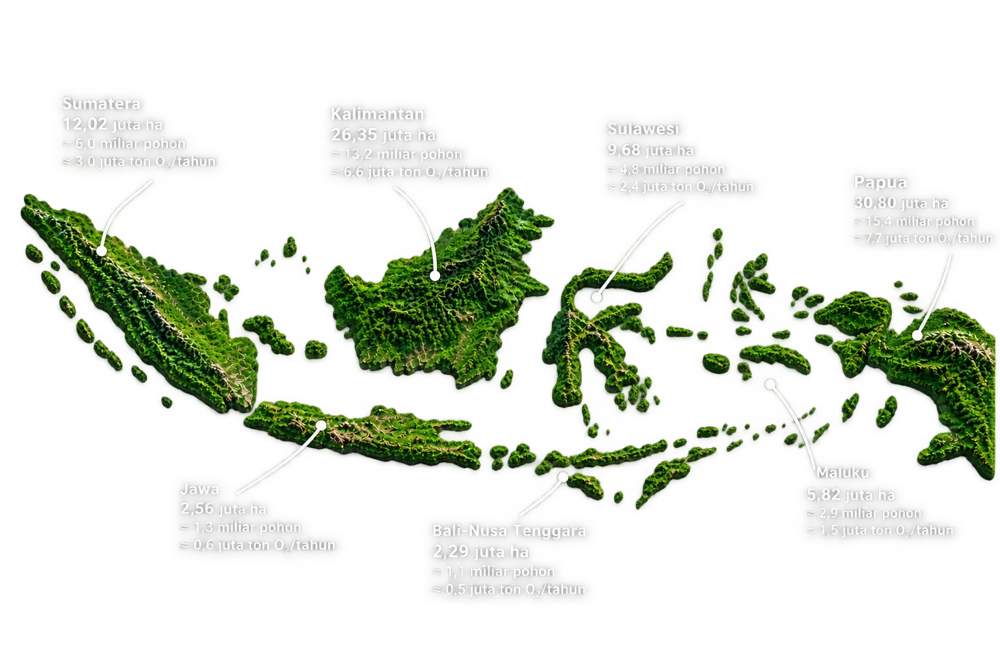
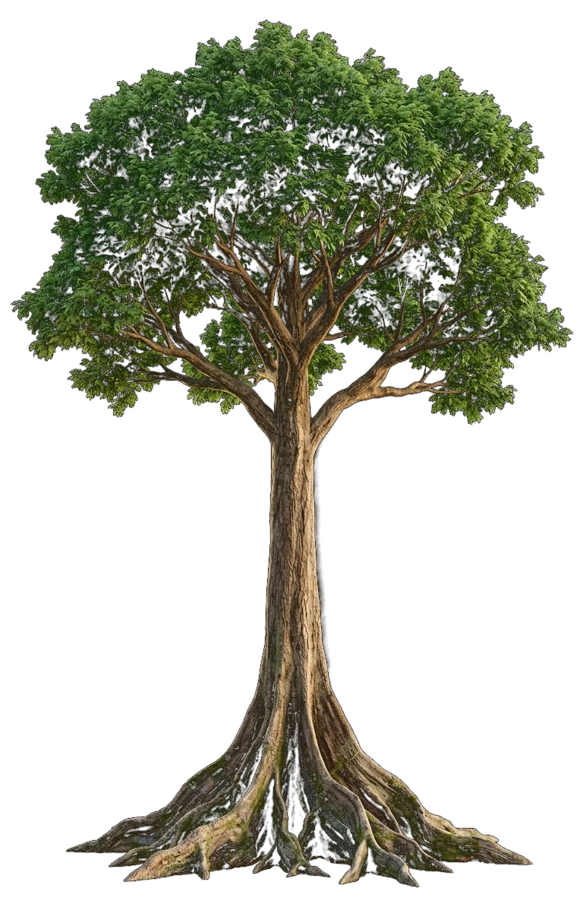
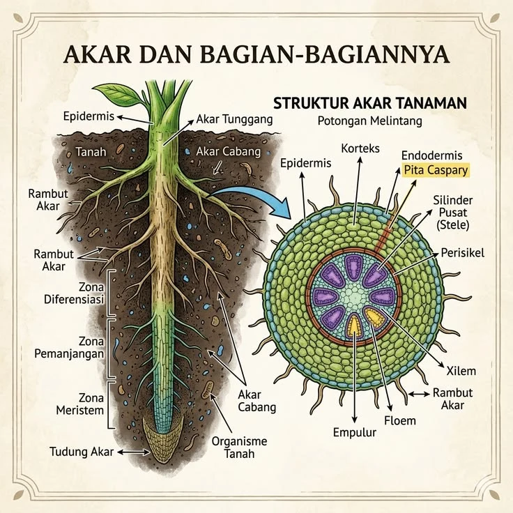
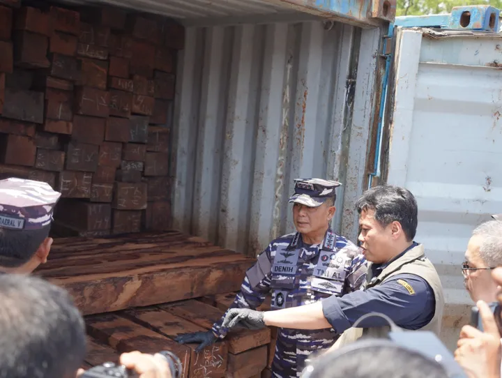

Paru-paru Nusantara.
Indonesia merupakan benteng zamrud khatulistiwa dengan keanekaragaman hayati terkaya ketiga di dunia, membentang melintasi ribuan pulau dari Sabang hingga Merauke.
Menaungi lebih dari 120 juta hektar kawasan hutan tropis alami, kepulauan Indonesia menjadi rumah bagi lebih dari 30.000 spesies flora berpembuluh serta ribuan fauna khas yang tidak dapat dijumpai di belahan bumi mana pun.
Hutan tropis Indonesia berfungsi sebagai spons penyerap karbon global alami terbesar, mengunci miliaran ton cadangan karbon bumi sekaligus menghasilkan pasokan oksigen murni bagi kelangsungan generasi dunia.



Keajaiban Struktur Pohon Raksasa.
Pohon emergent hutan hujan tropis menjulang lebih dari 60 meter. Klik bagian pohon di atas untuk mempelajari detail lapisan struktur biologisnya.

Ancaman Nyata: Perusakan Hutan oleh Manusia
Eksploitasi tak terkendali, ancaman jeratan sanksi pidana kehutanan di Indonesia, serta rekaman investigasi nyata kehancuran zamrud khatulistiwa.
Hukuman & Sanksi Pidana Perusakan Hutan
Undang-Undang Republik Indonesia menetapkan sanksi pidana kurungan berat, denda bernilai puluhan miliar rupiah, serta perampasan seluruh aset bagi pelaku perorangan maupun korporasi. Klik card di bawah untuk membuka dan menutup rincian hukumannya.
- Pasal 82 - 84 UU P3H: Penebangan pohon tanpa izin di dalam kawasan hutan konservasi atau lindung, pemuatan, pengangkutan, serta penadahan kayu tanpa Surat Keterangan Sahnya Hasil Hutan (SKSHH) diancam kurungan penjara maksimal 15 tahun.
- Pemberatan Korporasi: Pelaku korporasi, direksi, komisaris, maupun pemodal/cukong kayu diancam pidana denda hingga Rp 100 Miliar dan pemberatan sepertiga hukuman pokok.
- Perampasan Total Aset: Seluruh alat berat (eskavator, buldoser), gergaji mesin (chainsaw), armada truk pengangkut, dan seluruh tegakan kayu hasil tebangan ilegal dirampas untuk kas negara.
- Pasal 108 UU No. 32/2009: Setiap orang yang melakukan pembukaan lahan dengan cara membakar diancam pidana penjara paling singkat 3 tahun dan paling lama 10 hingga 15 tahun serta denda hingga Rp 15 Miliar.
- Prinsip Pertanggungjawaban Mutlak (Strict Liability): Korporasi pemegang izin HGU bertanggung jawab mutlak atas setiap titik kebakaran yang terjadi di areal konsesinya tanpa perlu pembuktian unsur kesalahan sengaja/lalai.
- Pencabutan Izin & Pemulihan Ekologis: Pembekuan dan pencabutan izin usaha secara permanen, sita jaminan perdata, dan kewajiban ganti rugi pemulihan ekologis tanah gambut bernilai miliaran rupiah.
- Pasal 21 & 40 UU KSDAE: Larangan menangkap, melukai, membunuh, menyimpan, memiliki, memelihara, mengangkut, dan memperniagakan satwa yang dilindungi (seperti Orangutan, Harimau Sumatera, Gajah Sumatera, Badak Jawa) maupun bagian tubuhnya.
- Perlindungan Flora Purba Langka: Menjerat siapa pun yang menebang, merusak, mengambil, atau memindahkan tumbuhan langka dilindungi seperti Ulin purba, Damar, Cendana, Kantong Semar, dan bunga Padma Raksasa (*Rafflesia arnoldii*).
- Rehabilitasi Wajib: Pelaku dikenakan kewajiban pembiayaan penuh rehabilitasi satwa ke habitat aslinya dan restorasi zona konservasi suaka margasatwa.
Galeri Rekaman: Aksi Nyata & Penyelamatan
Dokumentasi visual patroli rimba nusantara, penindakan pembalakan liar, operasi pemadaman karhutla lahan gambut, serta upaya restorasi pohon purba Indonesia.

Penyisiran Zona Inti Rimba
Operasi terpadu polisi kehutanan menyusuri batas taman nasional untuk membongkar jerat dan mencegah perambahan liar.

Pemadaman Bara Gambut
Satuan Manggala Agni memadamkan api bawah tanah di kubah gambut yang rawan menjalar luas saat musim kemarau ekstrem.

Evakuasi & Pelepasliaran
Penyelamatan induk dan bayi orangutan dari areal kebakaran konsesi menuju stasiun rehabilitasi dan suaka hutan lindung.

Penyitaan Armada & Kayu
Penyegelan barang bukti buldoser, truk logging, dan ribuan batang kayu bulat hasil operasi tangkap tangan pembalakan liar.

Deteksi Titik Api Real-Time
Pengawasan spasial resolusi tinggi untuk mendeteksi anomali suhu dan pembukaan tutupan tajuk pohon secara seketika dari orbit.

Penanaman Pohon Endemik
Penanaman kembali bibit Meranti dan Ulin purba di lahan bekas kebakaran untuk memulihkan daya serap karbon alami.
Sebaran Titik Panas & Bara Api Hutan
Sensor satelit mendeteksi koordinat suhu ekstrem dan bara gambut aktif di seluruh nusantara. Klik titik bara untuk rincian lokasi.
Mari Jaga Rimba Kita, Demi Masa Depan Bumi
Hutan hujan tropis Indonesia adalah benteng pertahanan iklim dunia dan rumah bagi puluhan ribu spesies purba. Masa depan paru-paru bumi ditentukan oleh kepedulian yang kita wujudkan bersama. Ambil peran nyata hari ini: ikrarkan komitmen pelestarianmu dan bagikan inspirasi ini ke seluruh penjuru negeri.